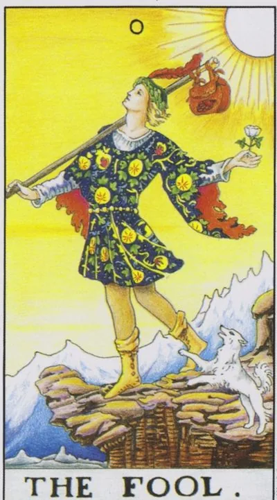

Major Arcana · 0
0The Fool
The beginning of a journey without guarantees: a clean slate, lightness and trust in life as it calls you beyond familiar territory—and the arcana asks only whether you will step into the unknown.
Archetype and core meaning
arcana Zero is out of order: it is both the beginning of the journey and its eternal possibility. A fool is a young man on the edge of a cliff with a flower in his teeth and a look up to the sky; he does not know what is down there, and that is why he can step. In Waite's tradition, innocence is not as ignorance, but as unobstructed: a consciousness without the weight of past defeats, able to see in the stranger not a threat, but an invitation.
The card describes the state of a clean start -- a new project, a move, a confession of feeling, the first page. It says, trust is now more important than calculation, details can be refined on the road. The fool reminds us that every master has once been a beginner, and freedom begins where the need for guarantees ends. In the case of the equation, his advice is usually simple and bold: walk.
Daily life
The typical Fool's day is spontaneous: going where you didn't plan to go, having a conversation with a stranger, starting what you put off "Monday," a good time of travel and experimentation -- but check that you have your documents, your wallet and your common sense. The day is favorable for undertakings that don't need preparatory bureaucracy.
Work and career
In work, a card means a new project, a change of field, a startup, or a first task in unfamiliar territory, and there is not enough experience, but there are no templates to prevent a fresh solution from being seen, and customers often value this view. The fool supports the initiative from the bottom: suggest, try, make mistakes quickly and cheaply.
Relationships
In a relationship, it's the unsafe phase of falling in love: lightness, flirting, wanting to break off the two of you on a no-route trip. For singles, it's a sign that the encounter will come unexpectedly and not be like the usual scenario at all. In an established union, the card calls to bring back the game and try together what you both feared.
Health
The energy is high, the body is asking for movement: walking, sports, changing environments are better than tonics. The card is good for starting a new program - training, eating, sleeping patterns. The weak spot is inattention: rushing on the road, extreme tricks, missed first symptoms.
Spiritual meaning
On the Tree of Life, the arcana lies between Hokma and Keter, the path of the Aleph, the ox, the element of air: pure impulse of the spirit before any design. Uranus gives the card the qualities of surprise and awakening; meditation on the Fool helps to let go of control and enter the flow. In practice, it is the best arcana for initiations, the beginning of learning and the first meeting with the teacher.
Leaping without wings: impulsivity and naivety turn into risk and irresponsibility – or, conversely, the fear of the first step keeps a person on the edge until the window of opportunity closes completely.
Archetype and core meaning
In an inverted position, the jump remains, but the choice disappears: the person falls, not flies. It is impulsiveness, which is mistaken for courage, naivety, which is used by other people's interests, adventure without a reserve parachute. Classical interpreters agree: an inverted Fool is a risk without looking back, stupidity, disguised as freedom, or childish helplessness in a situation that requires an adult decision.
The card can also show the second extreme, the stupor at the edge, the conditions are ripe, and the person checks and weighs and postpones everything until the window of opportunity closes. The arcana question is: where does healthy carelessness end and irresponsibility begin, and do you honestly call cowardice caution?
Daily life
In everyday life, an upside-down Fool is a day of distraction: lost keys, double-paid bill, late for the bus you were chasing. Bend to the proven routes and don't start big things: they won't have your attention. Beware of "profitable" offers from persistent people - the card classically points to simpletons who are riding. If you feel cornered by indecision, start with the smallest step: it will relieve half the fear.
Work and career
Professionally, it's risk without assessment: unsigned contracts, work on a word of honor, projects started on emotions and left in the middle. There's also a possible reverse drawing of a talented employee who has been preparing for months for a promotion and never submits it. The card warns against adventurous schemes and promises of quick money.
Relationships
In a relationship, the inverted Fool is immaturity: one of the two plays lightly, avoiding any responsibility, or, on the contrary, afraid of the first step for fear of looking stupid. The romantic scenario of “happened by itself” often turns into chaos without obligations, where no one owes anything to anyone. For couples, the card is a warning against rash decisions made on courage. The adult conclusion of the arcana: freedom in love creates reliability, not the absence of promises.
Health
The main risks are inattention: domestic injuries, sprains in the "drive" training, the consequences of small symptoms that are neglected. The card also indicates a lack of system — treatment is rushed halfway, prescriptions are taken somehow, hence prolonged malaise. Put in the basic order: appointment to the doctor, taking the alarm clock, avoiding extreme extremes until better times. The body now needs not feat, but accuracy and a little regime.
Spiritual meaning
In a spiritual sense, the inverted Aleph is an impulse that has not found its way: practices are started out of curiosity and abandoned, teachers are replaced as podcasts, and the free way turns into wandering. The card warns of pseudoteachers selling someone else's naivety, and of spiritual materialism - collecting experiences without depth. Working with it requires honesty: pick one door and enter.
🌿 In brief
The main idea
The fool in School of Modern Tarot is, first of all, the readiness for something new. It is not an action, but a state in which a person is already ready to take the first step. On the card, the figure is in motion, but it seems that for a moment it stopped: the decision is ripe, but the action is still ahead. And the fool doesn't mean stupid, he becomes a fool because he's in a completely new situation, he's a newcomer who doesn't have experience on that particular road, but he has all the previous experiences of life, the baggage he carries behind him. So zero is not a void here. It's the beginning of a new cycle. One life phase has ended and the next one begins. The old experience doesn't disappear, but it has to be re-interpreted and applied in other circumstances.
How it manifests
The fool brings the enthusiasm of the beginner, the desire to try new things, the feeling of freedom and the ability to go where an experienced person might not dare to go. But enthusiasm is not enough. Old knowledge cannot simply be mechanically transferred to a new situation; it must be reformatted. The first-time father finds, for example, that life and the usual solutions now require a completely different approach.
In a relationship
The card often speaks of a new level of relationship: a first date, the beginning of a life together, marriage, conception, the birth of a child or any other experience that a person encounters for the first time. In a good situation, it is a willingness to get to know your partner again, discover new sides of the relationship, and change for the sake of the other person. In an unfavorable manifestation, trust turns into naivety, and the desire for a new one into an attempt to simply escape from the old life.
Work and money
A new workplace, a promising beginner, the first management experience, the beginning of your own project or startup. But enthusiasm alone is not enough. If knowledge and experience are lacking, the Fool easily becomes a person who takes up the task, completely unaware of what he is doing.
The shadow side
The shadow side of the Fool is movement without direction, there's a lot of energy, and there's no idea where to put it. Fearlessness becomes recklessness, trust becomes trust, freedom becomes flight from reality, and a new path becomes another attempt to disengage from the past.
Feature of the school
The idea here is not to learn the fool so much as to feel it, it's a state of inner stagnation where the flow of thought is subdued for a moment, and the more you learn, the more you understand how much you don't know.
📜 In detail — lecture extracts
Essence of the card
A fool is an initiative and a desire to do something new: to do what you think is right for yourself. It is not a card of action, but of readiness to act: the figure is shown in motion, but has frozen — the idea you want to do has not yet become an action. The person has entered a new situation for the first time (a prince from another world, wandering in ours), so he is not a fool, but a beginner, zero without a stick: there is no experience of this situation, but in the purse there is all the previous life experience. Zeroboros: the beginning of an endless path of development, a new turn: a new one situation is the beginning.
Upright position
- The card was not deliberately divided into “positive” and “negative” – the meanings were understood from two sides at once:
- Potential: the desire to do something, moving forward, an interesting road.
- Enthusiasm: the energy of a beginner, but “you can’t go far on bare enthusiasm” – without reason (the next card carrying consciousness) nonsense comes out.
- Fearlessness: the hero is calm before what should be frightening; the healthy option is the confidence that they will insure: the sun as a higher consciousness and an all-seeing eye, a dog as subconscious warnings.
- Reformatting the experience: the old experience can not be applied in the old way - it must be packaged under a new situation (for example, a 40-year-old first-born father in a store needs diapers, not the usual beer with nuts).
- The fool’s “luck”: intuitively finds himself in the right place at the right time, without showing “signs of reason”; he has consciously done it – no longer luck.
- By spheres:
- Relationships are the main thing: a new level in any sense: first date, first sex, moving to a partner, marriage, conception and the birth of a child (more often the first child - with the second one already has experience), pluses: new facets of the partner, trusting the situation and intuition, willingness to learn again, trying to become better for the other. Cons: awkwardness, excessive credulity ("a fool is easy to cheat" - deceit and self-deception), fatalism ("will be as it will be"), selfishness and inability to stop in time; divorce as a situation where you are a fool; "a new reality" good only for one of one of the partners.
- - Work and society: a new workplace, a promising newcomer, the first promotion (yesterday tea was drunk - today I give orders), the birth of a startup (sell vacuum cleaners - open a service for their repair). Minus - hastily taken stupid or inexperienced employee, "he is zero."
- Self-development/philosophy: accepting yourself as I am ("I want to be a vegetarian, I accept myself with pros and cons"), the old knowledge suddenly adds up to a new level of puzzles, the feeling that the forces will look at you from above, the ability to listen to your "dog"; the more you learn, the wider the spaces and the more stupid you feel - although in fact you grow.
Negative meaning
- The formula for the school is, "The same thing, but with a bad taste for you."
- Never means “smart” – a fool who acts stupidly to the detriment of himself and the situation.
- potential without a vector: rushes, “runs on walls” – energy is there, where to apply – unknown;
- - stupid act, unprofessionalism, insecurity (raised - and you feel like an impostor);
- - opening a project with a lack of knowledge (sold vacuum cleaners - you climb to repair iPhones, "you are absolutely zero in this"); launching "for good luck" without market research;
- - denial of difficulties; recklessness as an extreme degree of fearlessness;
- Burning bridges when leaving the past situation is a trait of the “wrong fool”: you can not pretend that nothing happened, you must remember your mistakes.
- - in self-development: mindless escape from reality into a "new reality" (religion, sects, selling a house), discarding previous experience;
- complexes and unclosed gestalts: left the situation without closing it, - you pull the load in the backpack further; haste, incompleteness;
- - a distorted sense of being a puppet of higher powers.
School emphases and distinctive points
- - Analysis of the lines of Waite's description from the Illustrated Key: "the earth's firmament is not able to hold him" (intention, persuasion does not work), the face "glows with intelligence and dreaminess" (approach the plan intelligently and purposefully), "will return in another way many days later" (a hint of zero-uroboros).
- The main method of the school is to catch not memorized values, but the feeling from the card (Wait separated the arcana from the games with ready-made answers).
- Symbolism: dog - subconscious and animal reflexes (call with the dogs of the Moon); white rose - joy, peace, good intentions (return in the card Death - advises to study separately); staff - movement, fire; handbag / backpack - accumulated experience.
- - Joker line: two wild card jokers left in the playing deck from the senior lassas; "a fool can become anything, he is still at the beginning of a fairy tale."
- Mythology: Ivan the fool (name-amulet; "stay in the fool" = beggar with a staff and a bag; strategy of action on a guess, bringing success), Prince Myshkin, Hamlet, Forrest Gump (buyed Apple shares because of the logo - got rich).
- Cases: a man after clinical death received a Fool (a relative - a negative meaning) - dropped complexes, healed "like Forrest Gump", for him it is internal freedom. Another interlocutor described the posthumous sensation - "stand at the edge of the abyss, life below is swarming with ants, fall easily and even interesting"; This is an accurate description of the atmosphere of the card.
- The final feeling of the card: the cessation of internal dialogue, “lack of thought”, meditative state.
- The card’s advice (according to the tarologist Bantsakh he quoted): try a new one, go ahead carelessly, trust your instincts – they will save you in danger.
Keywords
- initiative; readiness for action (not yet action); new situation, beginner; enthusiasm; potential without vector; reformatting experience; backpack (former experience); uroboros / new round of life.
- ---